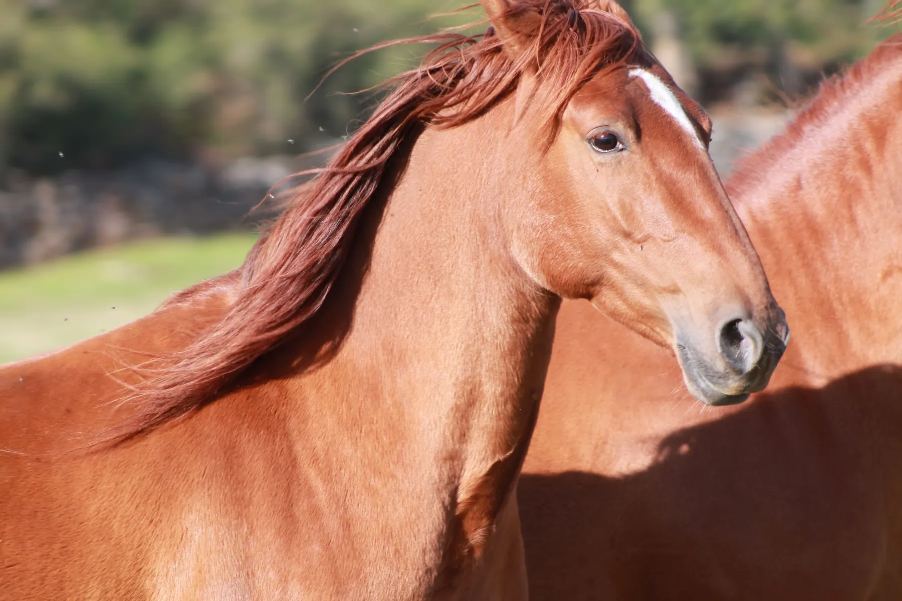

01Nacida: Abril 2011
Ula
Ula fue un regalo a la familia justo antes de que comenzara a existir el Santuario Winston. Ula vivió en los montes de la zona con su madre. Íbamos a verla todos los días y una de esas veces nos extrañó ver a la madre sola. Su madre estaba en los alrededores de una nave y nos comentaron que el dueño de esta había estado recogiendo los potros para llevarlos al matadero. Junto con un amigo, asaltamos el lugar para ver si estaba Ula dentro de la nave.
Leer su historia completa
Ula fue un regalo a la familia justo antes de que comenzara a existir el Santuario Winston. Ula vivió en los montes de la zona con su madre. Íbamos a verla todos los días y una de esas veces nos extrañó ver a la madre sola. Su madre estaba en los alrededores de una nave y nos comentaron que el dueño de esta había estado recogiendo los potros para llevarlos al matadero. Junto con un amigo, asaltamos el lugar para ver si estaba Ula dentro de la nave.
Esto llegó a oídos del ganadero. Casualmente, al día siguiente, Ula estaba otra vez con su madre en los montes. Pasado este episodio la recogimos y ha estado siempre bajo nuestro cuidado.
Actualmente Ula vive en el santuario con su hijo Yaki, descendencia de Kerry. Ella es un ser impresionantemente bello. Destaca por su carácter curioso aunque ese afán por conocer el mundo a veces le frena porque es algo desconfiada, pero cuando llegas a conectar con ella se deshace con los mimos.
Apadrinar a Ula